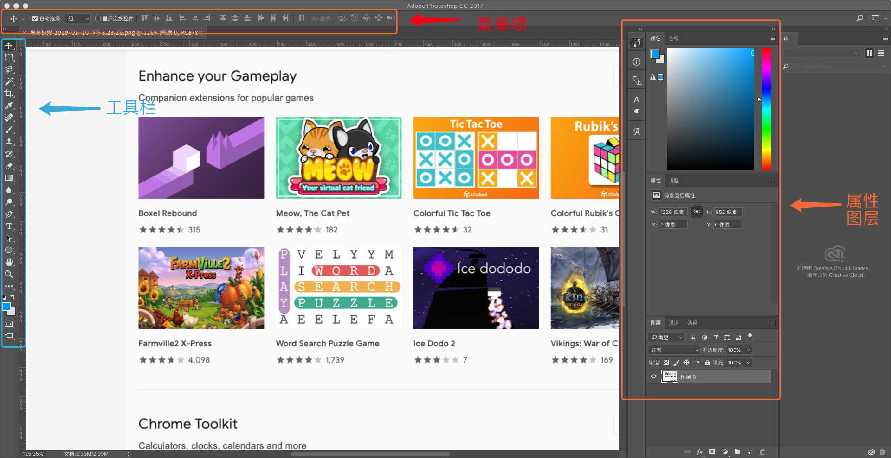
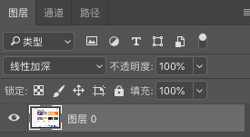
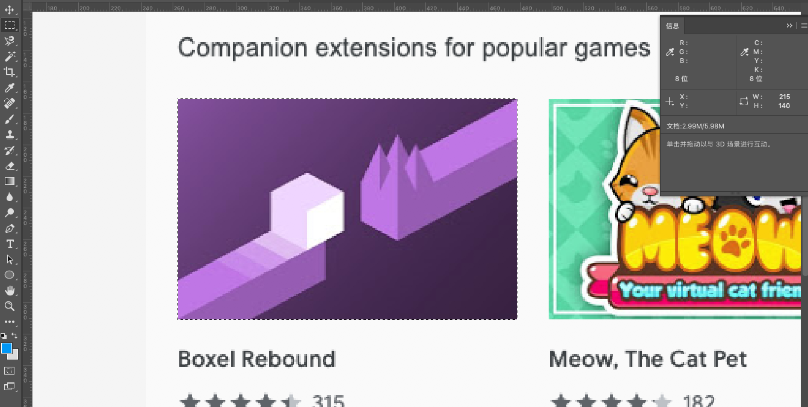
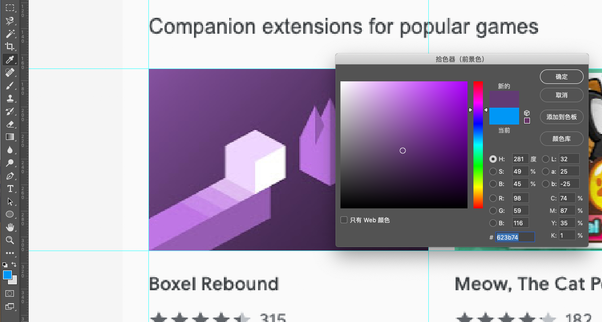
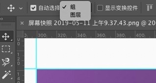

首先这边我先贴一个地址：https://www.adobe.com/cn/products/photoshop.html
安装软件，这里就不赘述了，真的不会，可以百度^_^我当初就是百度的，哈哈
说到PS,作为前端开发的同学，一点都不陌生

前端需要掌握的PS知识，也不是很多
针对页面布局，我们前端需要利用PS完成哪些准备工作呢？
1、我们需要测量目标元素的宽度和高度；
2、我们要知道目标元素的字体颜色，背景颜色
3、我们需要知道段落的行高，字符的属性
4、我们如何获取指定的图标，获取图标有啥快捷的方法
图片和PSD,打开有什么不同
我们打开图片的时候，PS也会有个图层，这个图层是背景图层，会把这个图层给锁定起来，我们要编辑的时候，要先双击一下该背景图层，将背景图层转换为普通图层（通常我改的时候，都会【Ctrl】+ 【J】）,通过拷贝建立一个新图层，防止误操作。
我们在打开PSD源文件的时候，就会看见好多图层，我们所看见的设计稿，就是由这些图层叠加上去的。表现这一点，感觉跟我们熟知的CSS很像。

拿到设计稿，我们要大致的确定下，版面的区域，宽度和高度，这个时候我们就要借助选区工具了
首先我们使用快捷键【M】,选取矩形选框工具，此时我们可以按【F8】使用信息窗口，该窗口会实时显示被选元素的宽度和高度，这样我们就轻而易举的拿到了目标元素的宽度和高度。另外的话，取消选框选择（【Ctrl】+ 【D】），用的也比较多

使用标尺（【Ctrl】+ 【R】）,我们按住鼠标左键不放，直接拖拽，直到贴合目标元素边缘，再按【M】,切换到矩形选框，我们直接框选被测元素，就可以获取到其宽度和高度了
拾色器说白了，就是获取颜色的，我们在开发的过程中，往往要涉及到字体颜色、背景色等诸多获取，拾色器方便快捷的解决了问题

我们利用这个工具，可以很轻松的拖拽设计稿，可以很轻松挪动显示区域，这个时候，我们往往会借助放大（【Ctrl】+ 【+】或者 【Alt】+ 鼠标滚轮）和缩小（【Ctrl】+ 【-】或者 【Alt】+ 鼠标滚轮）。
其实呢，抓手工具除了快捷键 【h】呢，我们也可以按住键盘上面的空格，然后按住鼠标的左键，进行拖拽
etc. 我们为了获取一个（目标元素），关键的一步，我们要选中它，如何快速的选中图层或者组，移动工具提供了接口，我们可以设置自动选择，勾选组或者图层，就可以快速的定位目标元素了，对应的切换到了对应的图层或者组了

既然我们已经找到了对应的图层，我们就可以通过矩形选框工具【M】，进行框选，然后复制 【Ctrl】 + 【C】 ---> 新建文件 【Ctrl】 + 【N】 ---> 粘贴 【Ctrl】 + 【V】，然后保存为 【Shift】 + 【Ctrl】 + 【S】。
我们就将视觉稿上面的元素，给切了下来（前端切图你学会了么，是不是很简单）